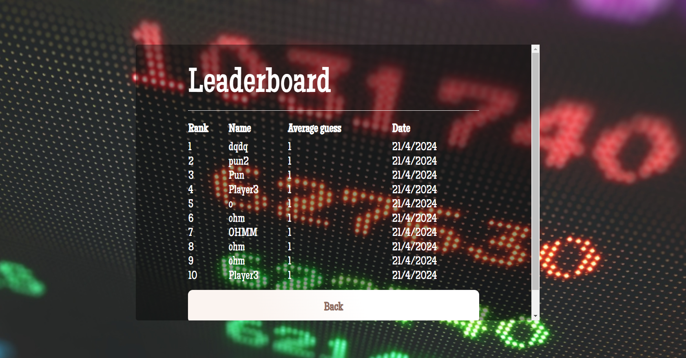

Pick the secret number chosen by the game within a range of 1 to 20.
After each guess, the game will provide you with feedback. Keep guessing numbers until you correctly guess
the secret number
If your guess is too low, the game will inform you that your guess is too low.
If your guess is too high, the game will inform you that your guess is too high.
If your guess is correct, the game will congratulate you and reveal the secret number.
After you've completed five rounds of guessing, the game will display the average number of guesses it took
you to find the secret number. The lower the average, the better your performance!
If you wish to play again, you can restart the game and try to improve your average number of guesses.
If your score ranks among the top 10, you'll find yourself on the leaderboard.
Features
Leaderboard

If your score ranks among the top 10, you'll find yourself on the leaderboard.
Sign-in/Sign-up
Sign-in/ sign-up feature to save your score history.